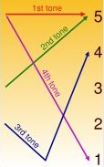

Tones
Chinese has four main tones and a neutral tone. - The first tone is a continuous heigh pitched tone.
- The second tone rises from mid to heigh pitch.
- The third tone falls from mid to low pitch and then rises to a heigh pitched tone.
- The fourth tone rapidly falls from high to low pitch.
The neutral tone is soft and short. It has no tone marker.
The tones are marked with diacritics over the main vowel of the syllable.
Example:
| mā, má, mǎ, mà, ma |